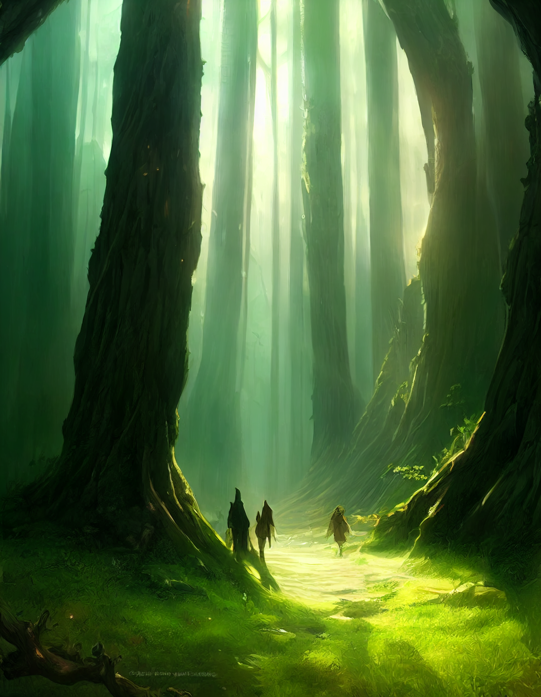
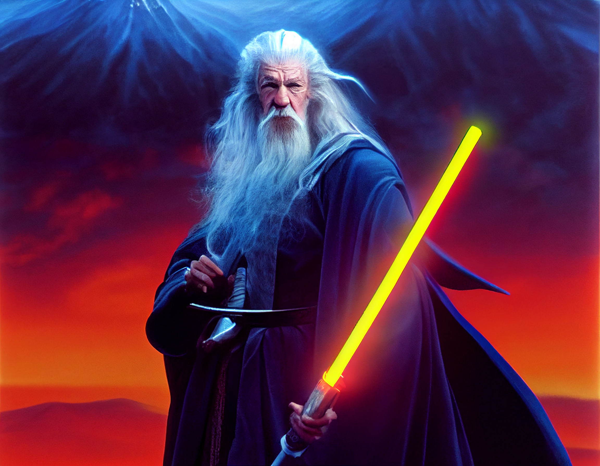
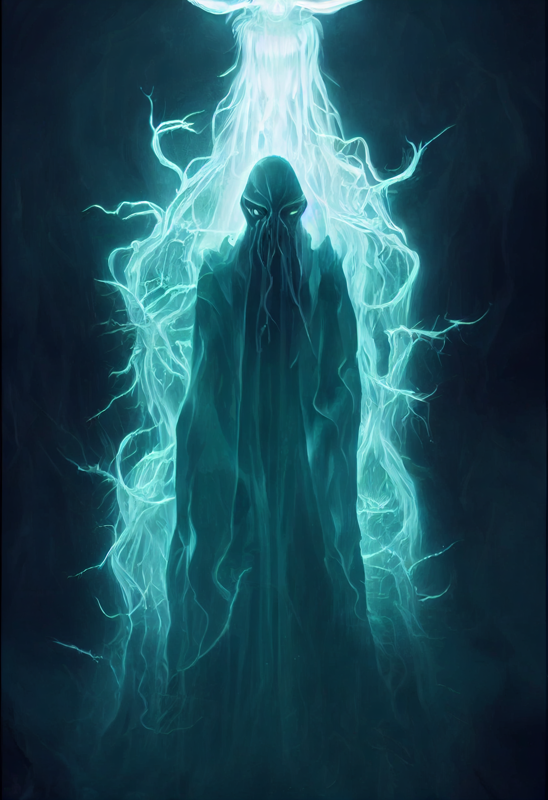

Exploring Generative AI Through Creative Experimentation
In 2022, I purchased a subscription to Midjourney out of pure curiosity. At the time, generative AI was beginning to attract widespread attention, and I wanted to experience the technology firsthand. Midjourney became my introduction to generative artificial intelligence and marked the beginning of my exploration into AI-assisted creativity.
Rather than approaching it as a professional tool, I viewed it as an opportunity to experiment and better understand what modern AI systems were capable of producing. I was fascinated by the idea that written prompts could be transformed into original artwork in a matter of seconds.
Most of my time with Midjourney was spent creating fantasy-themed artwork. I enjoyed experimenting with prompts describing mythical creatures, enchanted landscapes, castles, ancient ruins, magical forests, and imaginative worlds that would have been difficult to create through traditional digital art.
Each prompt became an opportunity to refine my wording and observe how subtle changes affected the generated images. This process taught me that successful image generation depended not only on the AI model itself but also on how clearly and creatively the prompt was written.
Although Midjourney produced impressive images for its time, I quickly recognized that the technology was still in its early stages. While many results were visually striking, consistency and fine-grained control were still limited. Generating exactly what I envisioned often required multiple iterations and experimentation.
Despite these limitations, the experience gave me valuable insight into the rapid pace of AI development. It demonstrated both the tremendous creative potential of generative models and the challenges that remained before they could become mature creative tools.
After several months of experimentation, I allowed my subscription to expire. My decision was not because I lost interest, but because I felt the technology still had significant room to mature. I decided it would be worthwhile to step back and revisit generative AI after it had evolved further.
Looking back, I believe that was the right decision. The experience gave me an appreciation for the direction AI was heading while also helping me recognize that meaningful technological progress often happens through continuous iteration.
My time with Midjourney represents the beginning of my journey into generative AI. Although my experimentation was relatively brief, it gave me firsthand experience with one of the earliest widely adopted AI image generation platforms. It also sparked a lasting interest in artificial intelligence that continues to influence how I explore emerging technologies today.


